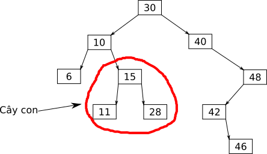

Cây tìm kiếm nhị phân
Cây tìm kiếm nhị phân
Cây tìm kiếm nhị phân
Contents
Cây nhị phân tìm kiếm là một cấu trúc thường được sử dụng trong tin học. Điển hình là các kiểu dữ liệu set và map của C++ được cài đặt bằng cây nhị phân tìm kiếm. Bài viết này sẽ cung cấp những kiến thức cơ bản về cây nhị phân tìm kiếm và cách cài đặt một cây nhị phân tìm kiếm đơn giản (không hiệu quả).
Cách cài đặt trong bài này không được sử dụng trong thực tế tuy nhiên sẽ là nền tảng để nghiên cứu các cấu trúc cây nhị phân cao cấp hơn.
Sơ lược về cây nhị phân
Cây nhị phân gồm nhiều nút, mỗi nút có nhiều nhất là 2 nút con, gọi là nút con trái và nút con phải. Các nút không có nút con nào gọi là nút lá.
Ngoài ra, mỗi nút đều có duy nhất một nút cha, trừ nút gốc của cây không có cha.
Mỗi nút có thể chứa thêm thông tin, gọi là khóa. Khóa của nút thường là một số nguyên, tuy nhiên có thể là bất cứ kiểu dữ liệu nào.
Sau đây là ví dụ một cây nhị phân với khóa là các số nguyên:
Ngoài ra, nếu cắt một nhánh của cây ta sẽ được một cây con:

Định nghĩa cây nhị phân tìm kiếm
Với cây nhị phân tìm kiếm, khóa của các đỉnh thỏa tính chất sau:
- Khóa của các đỉnh không trùng lặp, mỗi đỉnh có một khóa khác với tất cả các đỉnh còn lại.
- Với mỗi đỉnh, khóa của tất cả các đỉnh trong cây con bên trái nhỏ hơn khóa của đỉnh đó.
- Với mỗi đỉnh, khóa của tất cả các đỉnh trong cây con bên phải lớn hơn khóa của đỉnh đó.
Khóa của đỉnh phải là một kiểu dữ liệu có thể so sánh được.
Ví dụ một cây nhị phân tìm kiếm với khóa là số nguyên:
Khi cài đặt, ta cần một kiểu dữ liệu để lưu nút của cây:
struct Node {
int key;
Node *left = nullptr, *right = nullptr;
Node(int key) : key(key) {}
};
Trong đó:
leftlà con trỏ đến nút con bên tráirightlà con trỏ đến nút con bên phảikeylà khóa của nút
Để cho thuận tiện, ta thêm một constructor cho kiểu dữ liệu vừa tạo.
Thao tác thêm
Phần này sẽ trình bày thao tác thêm một nút có khóa K vào cây nhị phân tìm kiếm.
Vì các khóa trong cây phải khác nhau nên nếu K đã tồn tại trên cây thì sẽ không có nút
nào được thêm vào.
Việc thêm một khóa được thực hiện một cách đệ quy:
- Nếu vị trí đang xét chưa tồn tại nút nào thì ta tạo tại đó một nút mới với khóa là khóa cần thêm.
- Ngược lại, khi nút đang xét đã tồn tại thì có 3 trường hợp:
- Khóa của nút đang xét bằng
K, trong trường hợp này ta dừng, không thêm nữa. - Khóa của nút đang xét lớn hơn
K, ta thấy nút cần thêm phải nằm trong cây con bên phải của nút đang xét, vì vậy ta gọi đệ quy xuống cây con bên phải. - Khóa của nút đang xét nhỏ hơn
K, ta gọi đệ quy xuống cây con bên trái.
- Khóa của nút đang xét bằng
Với quy trình như trên, nút mới luôn là nút lá. Cài đặt trong C++ như sau:
Node* insert(Node *node, int key) {
if (node == NULL)
return new Node(key);
if (key < node->key)
node->left = insert(node->left, key);
else if (key > node->key)
node->right = insert(node->right, key);
return node;
}
Ví dụ sử dụng hàm trên:
int main() {
Node* root = NULL;
root = insert(root, 2);
root = insert(root, 1);
root = insert(root, 5);
cout << root->key << root->left->key << root->right->key;
}
Chú ý khi gọi hàm, cần gán lại nút gốc như trên.
Thao tác tìm kiếm
Phần này trình bày thao tác tìm một nút có khóa bằng K trên cây. Trong trường hợp
không tìm thấy, trả về NULL.
Thao tác tìm kiếm cũng được thực hiện đệ quy tương tự như trên. Cụ thể:
- Nếu vị trí đang xét chưa có nút nào, trả về
NULLvới ý nghĩa là không tìm thấy. - Ngược lại, ta so sánh
Kvới khóa của nút đang xét, sau đó đệ quy sang trái/phải hoặc trả về nút hiện tại tùy thuộc vào kết quả so sánh lớn hơn/bé hơn hoặc bằng.
Cài đặt của thao tác này đơn giản hơn:
Node* find(Node *node, int key) {
if (node == NULL)
return NULL;
if (key > node->key)
return find(node->right, key);
if (key < node->key)
return find(node->left, key);
return node;
}
Việc khử đệ quy hàm trên khá dễ, bạn đọc có thể tự tìm hiểu.
Thao tác xóa
Xóa một nút phức tạp hơn so với việc thêm và tìm kiếm. Ta có 3 trường hợp:
Nút cần xóa không có nút con nào
Ở trường hợp này, chỉ đơn giản là xóa đi nút đó, không làm gì thêm.
Nút cần xóa có 1 nút con
Ở trường hợp này, ta thay nút cần xóa bằng nút con của nó.
Ví dụ:
Nút cần xóa có 2 nút con
Ở trường hợp này, ta tìm nút thay thế cho nút cần xóa, sau đó chuyển khóa của nút thay thế lên nút cần xóa, rồi cuối cùng mới xóa nút thay thế.
Ví dụ:
Ta thấy, nút thay thế phải là 1 trong 2 nút có khóa gần nhất với nút cần xóa, để việc chuyển khóa lên trên không vi phạm tính chất của cây.
Khi xóa nút thay thế, cũng phải xét xem nó có bao nhiêu nút con như khi xóa một nút bình thường.
Cài đặt
Cài đặt trong C++:
Node *find_remove(Node *root, int key) {
if (root == NULL)
return NULL;
if (root->key == key) {
if (root->left == NULL && root->right == NULL)
return NULL;
if (root->left != NULL && root->right != NULL) {
// Tìm nút thay thế
Node *successor = root->right;
while (successor->left != NULL)
successor = successor->left;
root->key = successor->key;
find_remove(root->right, successor->key);
return root;
}
if (root->left != NULL)
return root->left;
else
return root->right;
}
if (key > root->key)
root->right = find_remove(root->right, key);
else
root->left = find_remove(root->left, key);
return root;
}
Khi gọi hàm, tương tự như khi thêm nút, ta cũng phải gán:
root = find_remove(root, key);
Độ phức tạp
Độ phức tạp của các thao tác trên tùy thuộc vào độ cao của cây khi truy vấn. Với dữ liệu ngẫu nhiên, cách cài đặt cây nhị phân trong bài này có độ phức tạp trung bình cho mỗi thao tác là , với là số nút trên cây.
Tuy nhiên, độ phức tạp trong trường hợp xấu nhất là , vì vậy cây này không được sử dụng trong thực tế.